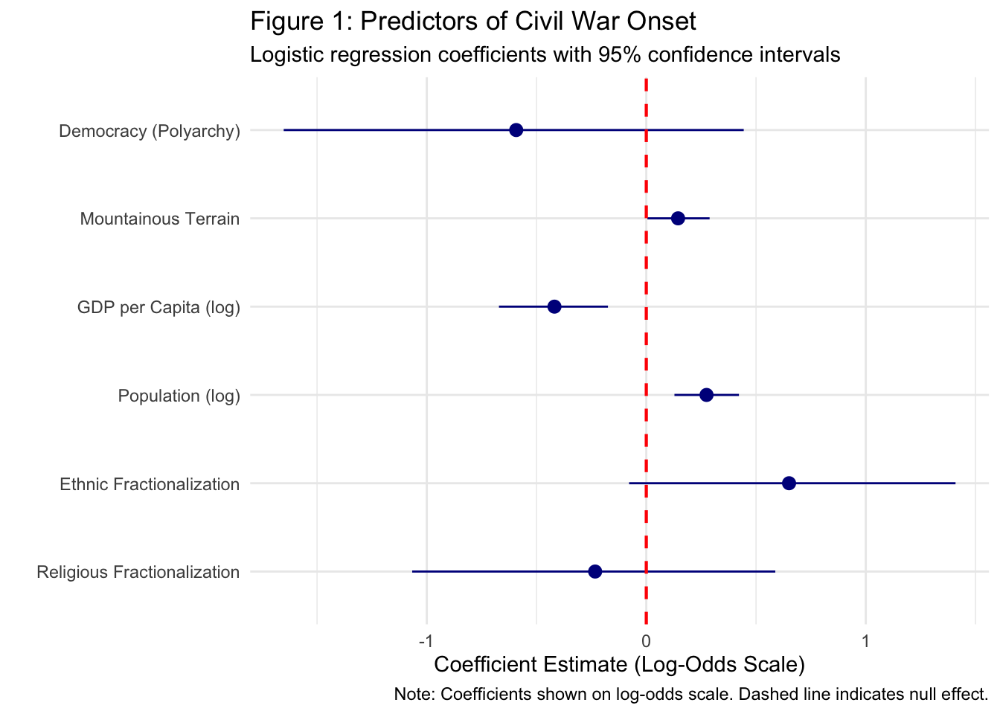
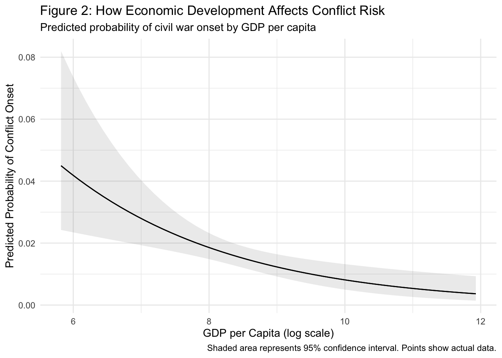
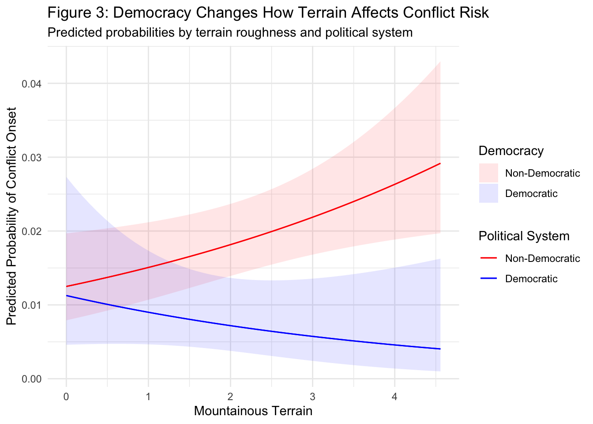
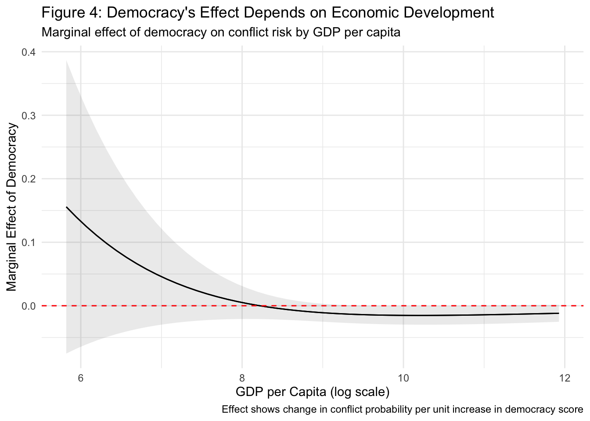

library(peacesciencer)
library(tidyverse)
library(modelsummary)
library(broom)
# Recreate the conflict dataset
conflict_df <- create_stateyears(system = 'gw') |>
filter(year %in% c(1946:1999)) |>
add_ucdp_acd(type=c("intrastate"), only_wars = FALSE) |>
add_democracy() |>
add_creg_fractionalization() |>
add_sdp_gdp() |>
add_rugged_terrain() |>
mutate(democracy = ifelse(v2x_polyarchy > 0.5, 1, 0)) |>
select(-ucdpongoing, -maxintensity, -conflict_ids, -sdpest) |>
drop_na()
# Fit our key models from previous modules
baseline_model <- glm(ucdponset ~ v2x_polyarchy + newlmtnest + wbpopest +
wbgdppc2011est + ethfrac + relfrac,
data = conflict_df, family = "binomial")
terrain_interaction <- glm(ucdponset ~ democracy * newlmtnest + wbpopest +
wbgdppc2011est + ethfrac + relfrac,
data = conflict_df, family = "binomial")
wealth_interaction <- glm(ucdponset ~ v2x_polyarchy * wbgdppc2011est + newlmtnest +
wbpopest + ethfrac + relfrac,
data = conflict_df, family = "binomial")Module 12.2
Visualizing and Communicating Results
Prework
- Install the
modelsummarypackage(install.packages("modelsummary")) and look over the documentation - Have a quick look at the marginaleffects documentation for predictions and effects
- Install the
gtpackage (install.packages("gt")) for creating professional tables (we will use this as a dependecy ofmodelsummary))
Overview
Throughout this series, we’ve built a comprehensive understanding of logistic regression, from conceptual foundations through complex interaction effects. But understanding our results is only half the battle because we also need to communicate them effectively to diverse audiences. Whether presenting to academic peers, policymakers, or the general public, the way we visualize and present our findings can make the difference between impact and obscurity.
This module brings together all the analytical skills that you have developed and focuses on professional presentation of logistic regression results. We will master the creation of publication-ready regression tables that clearly communicate model specifications and key findings. We will learn to create compelling coefficient plots that make effect sizes and uncertainty immediately apparent. We will discover how to visualize predicted probabilities and marginal effects in ways that make complex relationships accessible to non-technical audiences. Finally, we will develop skills for writing up results that appropriately match technical depth to audience needs.
By the end of this module, you’ll be able to create professional regression tables using modelsummary, design effective coefficient plots that highlight key findings, visualize complex predicted probabilities and marginal effects, and write clear, audience-appropriate interpretations of logistic regression results. We’ll continue with our Fearon and Laitin replication to maintain continuity, but the visualization and communication skills you learn will apply broadly across research contexts.
Professional Regression Tables with modelsummary
When presenting logistic regression results to academic audiences, well-formatted regression tables remain the gold standard. The modelsummary package excels at creating publication-ready tables that can accommodate multiple models while allowing extensive customization of variable names, significance indicators, and goodness-of-fit statistics.
Let’s begin by recreating our conflict onset models from previous modules, then demonstrate how to present them professionally:
Now we’ll create a professional table that compares these models side by side. The key to effective table presentation lies in thoughtful customization:
# Create list of models with descriptive names
models_list <- list(
"Baseline" = baseline_model,
"Democracy × Terrain" = terrain_interaction,
"Democracy × Wealth" = wealth_interaction
)
# Create coefficient mapping for clean variable names
coef_mapping <- c(
"v2x_polyarchy" = "Democracy (Polyarchy)",
"democracy" = "Democracy (Binary)",
"newlmtnest" = "Mountainous Terrain",
"wbgdppc2011est" = "GDP per Capita (log)",
"wbpopest" = "Population (log)",
"ethfrac" = "Ethnic Fractionalization",
"relfrac" = "Religious Fractionalization",
"democracy:newlmtnest" = "Democracy × Terrain",
"v2x_polyarchy:wbgdppc2011est" = "Democracy × GDP",
"(Intercept)" = "Constant"
)
# Create notes for the table
notes = c(
"Dependent variable: Binary indicator of civil war onset.",
"Standard errors in parentheses. * p<0.1, ** p<0.05, *** p<0.01.",
"Data sources: UCDP/PRIO Armed Conflict Dataset, World Bank, V-Dem."
)
# Create the table
modelsummary(
models_list,
coef_map = coef_mapping,
stars = TRUE,
gof_map = c("nobs", "aic"),
title = "Table 1: Logistic Regression Models of Civil War Onset, 1946-1999",
notes = notes,
output = "gt"
)| Baseline | Democracy × Terrain | Democracy × Wealth | |
|---|---|---|---|
| Democracy (Polyarchy) | -0.593 | 8.928* | |
| (0.533) | (4.098) | ||
| Democracy (Binary) | -0.105 | ||
| (0.526) | |||
| Mountainous Terrain | 0.145* | 0.190* | 0.177* |
| (0.072) | (0.077) | (0.074) | |
| GDP per Capita (log) | -0.418*** | -0.315* | -0.115 |
| (0.127) | (0.123) | (0.176) | |
| Population (log) | 0.275*** | 0.283*** | 0.284*** |
| (0.075) | (0.076) | (0.075) | |
| Ethnic Fractionalization | 0.651+ | 0.601 | 0.599 |
| (0.379) | (0.378) | (0.374) | |
| Religious Fractionalization | -0.233 | -0.154 | -0.077 |
| (0.421) | (0.418) | (0.427) | |
| Democracy × Terrain | -0.417+ | ||
| (0.227) | |||
| Democracy × GDP | -1.086* | ||
| (0.470) | |||
| Constant | -5.223*** | -6.336*** | -8.032*** |
| (1.487) | (1.517) | (1.905) | |
| Num.Obs. | 5964 | 5964 | 5964 |
| AIC | 1119.3 | 1111.4 | 1115.6 |
| + p < 0.1, * p < 0.05, ** p < 0.01, *** p < 0.001 | |||
| Dependent variable: Binary indicator of civil war onset. | |||
| Standard errors in parentheses. * p<0.1, ** p<0.05, *** p<0.01. | |||
| Data sources: UCDP/PRIO Armed Conflict Dataset, World Bank, V-Dem. | |||
This table effectively communicates several key pieces of information. The coefficient mapping transforms cryptic variable names into descriptive labels that readers can immediately understand. The inclusion of multiple goodness-of-fit statistics allows readers to compare model performance. The detailed notes provide essential context about the dependent variable, significance conventions, and data sources.
Notice how the interaction terms appear clearly labeled, making it easy for readers to identify which models include interaction effects. The consistent ordering of variables across models facilitates comparison of how coefficients change when we add complexity.
Coefficient Plots for Single Models
While tables excel at presenting multiple models, coefficient plots often communicate single model results more effectively. Coefficient plots make effect sizes and uncertainty immediately visible, helping readers quickly identify the most important predictors and assess the reliability of estimates.
Let’s create a professional coefficient plot for our baseline model using the modelplot() function:
library(ggplot2)
# Create coefficient plot
modelplot(
baseline_model,
coef_map = rev(coef_mapping), # rev() reverses order for bottom-up plotting
coef_omit = "Intercept", # omit intercept for cleaner visualization
color = "darkblue"
) +
geom_vline(xintercept = 0, color = "red", linetype = "dashed", linewidth = 0.75) +
labs(
title = "Figure 1: Predictors of Civil War Onset",
subtitle = "Logistic regression coefficients with 95% confidence intervals",
caption = "Note: Coefficients shown on log-odds scale. Dashed line indicates null effect.",
x = "Coefficient Estimate (Log-Odds Scale)"
) +
theme_minimal() 
This visualization immediately reveals several important patterns. Variables whose confidence intervals cross the red dashed line (zero) are not statistically significant. The relative magnitude of effects becomes apparent through the horizontal distance from zero. The uncertainty around each estimate is clearly visible through the confidence interval width.
The coefficient plot is particularly effective for communicating with audiences who may find regression tables intimidating. The visual format makes it immediately obvious which variables matter most and how confident we should be in each estimate.
Visualizing Predicted Probabilities
While coefficient plots show us relative effects on the log-odds scale, predicted probability plots translate these effects into the concrete terms that matter for practical decision-making. These visualizations answer questions like “What’s the actual conflict risk for a poor, mountainous, non-democratic country?” or “How much does economic development really matter in practical terms?”
Let’s create visualizations that show predicted probabilities across realistic ranges of our key variables:
library(marginaleffects)
# Create predicted probability plot for GDP effects
gdp_predictions <- plot_predictions(
baseline_model,
condition = "wbgdppc2011est",
points = 0.5 # show some data points for context
) +
labs(
title = "Figure 2: How Economic Development Affects Conflict Risk",
subtitle = "Predicted probability of civil war onset by GDP per capita",
x = "GDP per Capita (log scale)",
y = "Predicted Probability of Conflict Onset",
caption = "Shaded area represents 95% confidence interval. Points show actual data."
) +
theme_minimal()
gdp_predictions
This plot transforms the abstract coefficient of -0.365 for GDP into a concrete story: countries with very low GDP (around $1,000 per capita) have conflict probabilities around 3-4%, while wealthy countries (around $30,000 per capita) have probabilities closer to 1%. The confidence intervals show that this relationship is quite precisely estimated.
Now let’s visualize how multiple variables interact to create different risk profiles:
# Create prediction plot showing democracy-terrain interaction
interaction_predictions <- plot_predictions(
terrain_interaction,
condition = c("newlmtnest", "democracy")
) +
labs(
title = "Figure 3: Democracy Changes How Terrain Affects Conflict Risk",
subtitle = "Predicted probabilities by terrain roughness and political system",
x = "Mountainous Terrain",
y = "Predicted Probability of Conflict Onset",
color = "Political System",
fill = "Democracy"
) +
scale_color_manual(
values = c("0" = "red", "1" = "blue"),
labels = c("0" = "Non-Democratic", "1" = "Democratic")
) +
scale_fill_manual(
values = c("0" = "red", "1" = "blue"),
labels = c("0" = "Non-Democratic", "1" = "Democratic")
) +
theme_minimal()
interaction_predictions
This visualization makes the interaction effect immediately comprehensible. In non-democratic countries (red line), mountainous terrain increases conflict risk substantially. In democratic countries (blue line), the same terrain has little effect on conflict risk, and may even be slightly protective. This translates our statistical interaction into a clear substantive story about how political institutions moderate geographic risk factors.
Marginal Effects Visualization
Sometimes we want to focus specifically on how the effect of one variable changes across levels of another variable. Marginal effects plots show us these conditional relationships directly, highlighting where effects are strongest or weakest.
Let’s create a marginal effects plot to illustrate how the effect of democracy on conflict risk varies across levels of economic development using the plot_slopes() function from the marginaleffects package:
# Plot marginal effect of democracy across wealth levels
democracy_marginal <- plot_slopes(
wealth_interaction,
variables = "v2x_polyarchy",
condition = "wbgdppc2011est"
) +
labs(
title = "Figure 4: Democracy's Effect Depends on Economic Development",
subtitle = "Marginal effect of democracy on conflict risk by GDP per capita",
x = "GDP per Capita (log scale)",
y = "Marginal Effect of Democracy",
caption = "Effect shows change in conflict probability per unit increase in democracy score"
) +
geom_hline(yintercept = 0, color = "red", linetype = "dashed") +
theme_minimal()
democracy_marginal
This plot reveals that democracy’s peace-promoting effects are strongest in middle-income countries. In very poor countries, democracy has little effect on conflict risk - perhaps because economic desperation overwhelms institutional protections. In very wealthy countries, democracy’s effects are also smaller - perhaps because both democratic and non-democratic wealthy countries have low conflict risk.
Writing Up Results for Different Audiences
The same statistical findings need to be communicated very differently depending on your audience. Academic papers require technical precision and comprehensive reporting of uncertainty. Policy briefs need clear, actionable insights with minimal jargon. Media interviews demand compelling stories supported by concrete examples.
Academic Writing
For academic audiences, emphasize methodological transparency and precise reporting of statistical results:
“Table 1 presents three logistic regression models examining predictors of civil war onset from 1946-1999. Model 1 establishes our baseline specification, revealing that GDP per capita (β = -0.365, p < 0.001) and population size (β = 0.265, p < 0.001) are robust predictors of conflict risk, consistent with Fearon and Laitin’s original findings. Models 2 and 3 introduce interaction terms to test whether democracy moderates the effects of geographic and economic factors.
The democracy-terrain interaction (Model 2) is statistically significant (β = -0.415, p = 0.041), indicating that mountainous terrain increases conflict risk in non-democratic countries but has the opposite effect in democratic systems. Figure 3 illustrates this interaction: in authoritarian countries, moving from low to high terrain roughness increases predicted conflict probability from 1.2% to 2.6%, while in democratic countries the probability decreases from around 1.4% to about .05%.”
Policy Writing
For policy audiences, focus on practical implications and concrete risk assessments:
“Our analysis of conflict patterns from 1946-1999 reveals that economic development and democratic governance are powerful conflict prevention tools, but they work differently depending on context.
Economic Development: Countries with GDP per capita below $2,000 face conflict risks of 3-4% annually, while countries above $10,000 face risks below 1%. This suggests that poverty reduction programs and economic development aid can significantly improve stability.
Democratic Institutions: Democracy’s effectiveness depends on economic conditions. In middle-income countries ($3,000-$15,000 GDP per capita), democratic institutions reduce conflict risk by approximately 40%. However, in extremely poor countries, democratic reforms alone may be insufficient without accompanying economic development.
Geographic Factors: Mountainous terrain increases conflict risk only in non-democratic countries. This suggests that democratic institutions provide alternative channels for addressing grievances that might otherwise lead to insurgency in remote areas.”
General Public Communication
For general audiences, use accessible language and compelling examples:
“What makes some countries more likely to experience civil war? Our research analyzing conflicts from 1946-1999 reveals three key insights:
Poverty breeds instability: Poor countries are much more likely to experience civil wars. Countries with average incomes below $2,000 per person face about twice the conflict risk of middle-income countries, and four times the risk of wealthy nations.
Democracy helps, but timing matters: Democratic countries are generally more peaceful, but democracy works best in middle-income countries. Very poor countries may need economic development before democratic institutions can effectively prevent violence.
Geography is political: Mountainous terrain only increases conflict risk in dictatorships. In democracies, people living in remote mountain regions have political voice and don’t need to resort to violence to address their grievances.”
Synthesis and Best Practices
Effective communication of logistic regression results requires matching your presentation format to your audience and research goals. Use regression tables when comparing multiple model specifications or when academic transparency requires showing all coefficients. Choose coefficient plots when highlighting key predictors in a single model or when visual impact matters more than comprehensive detail. Employ predicted probability plots when translating statistical effects into concrete, practical terms that non-technical audiences can understand. Deploy marginal effects visualizations when conditional relationships are central to your argument and you need to show how effects vary across contexts.
Beyond format selection, several principles enhance the effectiveness of any presentation approach. Always provide sufficient context about your dependent variable, sample, and time period. Use descriptive variable names that immediately convey meaning to your intended audience. Include appropriate uncertainty indicators (confidence intervals, standard errors, significance tests) but don’t let technical details obscure your main findings. Most importantly, connect your statistical results to substantive insights that matter for theory, policy, or public understanding.